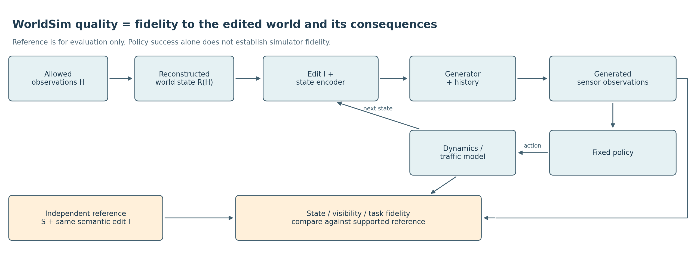
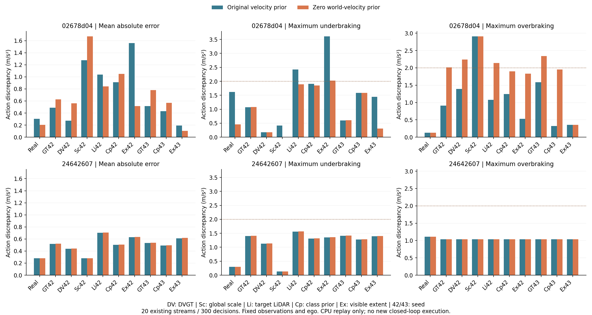

V7.5 · 研究定义 · 2026-09-21 · 本页不是新反事实实验结果
输入无法确定的事实保留不确定性。我们研究哪些可传入的重建状态能改善这一点，不预设更复杂的重建必然有用。

编辑世界：把车 A 移走，参考世界也要移走 A。原日志未来不再是唯一正确答案。
估错世界：在同一编辑后参考世界内，比较自然重建、普通修复和额外信息参考。参考不能跟着错误估计一起移动。
| 轴 | 具体问题 | 有效参照 |
|---|---|---|
| 重放保真 | 未编辑、同动作同相机，是否复现观测？ | 真实记录的可支持区域 |
| 编辑遵循 | 对象是否真的移除/移动，身份和尺寸是否保持？ | 明确的编辑命令＋生成观测 |
| 无关事实保留 | 未受影响的对象和地图是否保留？ | 共同可见事实；允许遮挡和合理交互改变 |
| 世界与可见性一致 | 已知对象在显露、新视角后是否仍一致？ | 独立观测/已知场景；未知隐藏内容不冒充真值 |
| 决策与后果保真 | 同一策略的事件、效用和相对优劣是否符合参考？ | 编辑后的可信参考；不奖励贴近未编辑日志 |
如果差策略在参考世界会撞车，仿真却让它通过，碰撞率下降反而可能是 false-safe。任务成功、碰撞和进度是策略表现；仿真质量要看这些结果相对参考有多准确。单一 IDM 不能证明策略排名一致性。
先在已有两个开发任务检查一个合格目标：被遮挡内容有真实证据，移除后的初帧与条件一致，重建差异确实进入模型。任一不满足，记录数据或接口缺口，不靠扩大编辑强迫失败。
资格通过后才冻结最多六段：参考结构、合法输入估计、普通框先验，各有未编辑/移除配对；固定动作与相机、seed42、117帧。先检验编辑、显露与无关事实，再决定是否值得做最多三段实际反馈。GT/LiDAR 单列额外信息；没有合法初态与阈值前不启动该队列。
反事实范围按编辑类型、输入预算、参考覆盖和质量轴分别报告。离散测试点不代表整条连续曲线；遮挡切换也不必平滑或单调。
已有两个任务证明真实生成反馈可运行，也保留了普通控制、负结果和一个可由普通类别先验改善的小效应。它们没有证明重建已经普遍成熟，也没有证明反事实仿真正确。较大形状候选额外 seed 未复现，不重开。
唯一改变是新轨迹的世界速度均值：ego 速度 → 0。复用检测、相机与保存的 ego，非新闭环执行。300次评价选择的目标框不变，原实现700次访问精确复现。固定主项平均误差1.102→0.891，最大欠制动2.420→1.890，但额外制动1.114→2.142 m/s²，未通过；同场景两个GT seed也出现门控退化。未启动新生成，不扩展速度/噪声搜索。

图中三项均相对同一保存 ego 的物理参考 IDM；主项门控相对条件状态参考、排除共同初帧，两者不能混用。
| 日志 | 分支 | seed | 平均绝对误差 | 最大欠制动 | 最大额外制动 |
|---|---|---|---|---|---|
| 02678d04 | real | None | 0.305 → 0.205 | 1.622 → 0.455 | 0.129 → 0.129 |
| 02678d04 | gt_clean | 42 | 0.488 → 0.628 | 1.075 → 1.081 | 0.913 → 2.014 |
| 02678d04 | dvgt_metric | 42 | 0.273 → 0.561 | 0.172 → 0.173 | 1.392 → 2.243 |
| 02678d04 | dvgt_lidar_scaled | 42 | 1.277 → 1.673 | 0.416 → 0.000 | 2.911 → 2.911 |
| 02678d04 | reference_lidar | 42 | 1.037 → 0.840 | 2.427 → 1.896 | 1.080 → 2.142 |
| 02678d04 | dvgt_class_prior | 42 | 0.912 → 1.051 | 1.906 → 1.855 | 1.244 → 1.897 |
| 02678d04 | dvgt_visible_extent | 42 | 1.562 → 0.516 | 3.612 → 2.026 | 0.529 → 1.834 |
| 02678d04 | gt_clean | 43 | 0.516 → 0.781 | 0.597 → 0.603 | 1.583 → 2.338 |
| 02678d04 | dvgt_class_prior | 43 | 0.429 → 0.568 | 1.589 → 1.589 | 0.320 → 1.955 |
| 02678d04 | dvgt_visible_extent | 43 | 0.194 → 0.105 | 1.442 → 0.306 | 0.352 → 0.352 |
| 24642607 | real | None | 0.281 → 0.281 | 0.298 → 0.298 | 1.112 → 1.112 |
| 24642607 | gt_clean | 42 | 0.520 → 0.523 | 1.401 → 1.409 | 1.034 → 1.034 |
| 24642607 | dvgt_metric | 42 | 0.440 → 0.443 | 1.126 → 1.134 | 1.034 → 1.034 |
| 24642607 | dvgt_lidar_scaled | 42 | 0.280 → 0.280 | 0.136 → 0.136 | 1.034 → 1.034 |
| 24642607 | reference_lidar | 42 | 0.703 → 0.707 | 1.558 → 1.567 | 1.034 → 1.034 |
| 24642607 | dvgt_class_prior | 42 | 0.505 → 0.508 | 1.307 → 1.315 | 1.034 → 1.034 |
| 24642607 | dvgt_visible_extent | 42 | 0.628 → 0.633 | 1.354 → 1.364 | 1.034 → 1.034 |
| 24642607 | gt_clean | 43 | 0.534 → 0.538 | 1.407 → 1.416 | 1.034 → 1.034 |
| 24642607 | dvgt_class_prior | 43 | 0.493 → 0.497 | 1.274 → 1.283 | 1.034 → 1.034 |
| 24642607 | dvgt_visible_extent | 43 | 0.612 → 0.617 | 1.391 → 1.400 | 1.034 → 1.034 |
NuRec / Li Auto分别评价传感器、感知与闭环一致性。OmniDreams提供结构化状态与生成历史通路。World-in-World说明视觉质量不足以评价任务价值；它不替我们提供反事实真值。
human_verdict: null · 不新增科学失败卡 · 定义不等于主张已成立
{kind=link}